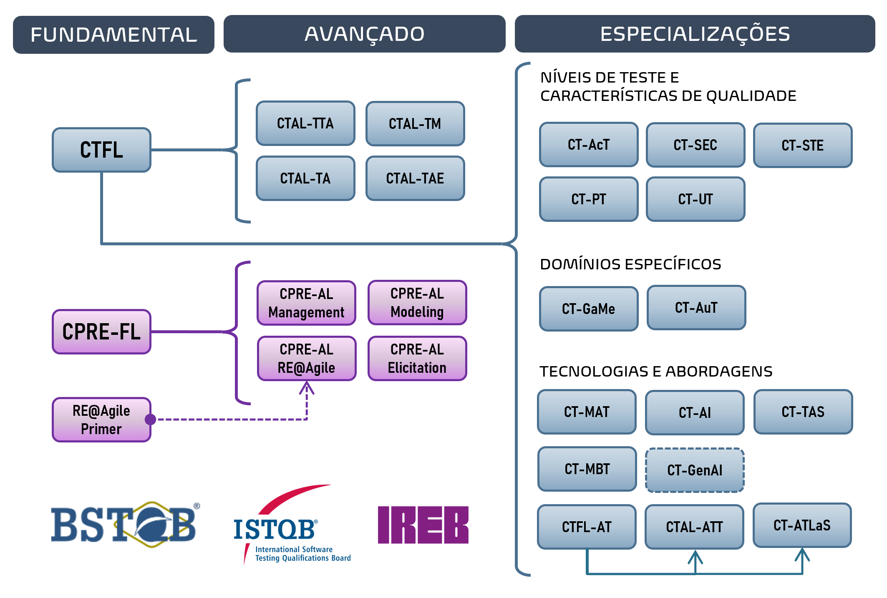

Eu sou de Pindamonhanhanba SP.
Sou deficiente auditiva oralizada, tenho boa comunicação, uso próteses auditivas, oralizada (converso normalmente).
Experiência na área de TI mais 10 anos com conhecimento em análise de sistemas, BI e SQL/PLSQL. Na área QA é nova carreira profissional.
Analista Teste
Compass Uol
Apoio na definição e evolução dos processos de qualidade no time e desenvolvimento
Prática em desenvolvimento de cenários de teste utilizando BDD e Gherkin a partir de Requisitos de Negócio, Documentações Técnicas e Histórias de Usuário.
Desenvolvimento Cypress (Básico)
Desenvolvimento Robot Framework (Básico)
Analista de Sistemas
Hospital 10 de Julho / Unimed Pindamonhanhanba
Sistema: Tasy (Philips)
Análise de Sistemas
Implementações dos módulos
Desenvolvimento relatório (Oracle)
Parametrização conforme aos processos institucionais
Integração (Tasy x Totvs);
- HTML & CSS
- JavaScript
- CSS3
- Oracle
- Cypress (Básico)
- Robot Framework (Básico)
- Playwright (Básico)
- React (Básico)
- Node.js (Básico)
Graduação: Engenharia de Computação
Universidade de Taubaté - UNITAU
Pós Graduação: Engenharia da Qualidade de Software
SENAC
Pós Graduação: Gestão de Big Data e Business Analytics
SENAC
- Cypress
- Robot Framework
- Playwright
Certificação: Foundation Level (CTFL)
A certificação é essencial para adquirir conhecimentos básicos em testes, aplicáveis a cenários do mundo real.
Robot Framework Certified Professional
A certificação Robot Framework® Certified Professional (RFCP®) fornece uma compreensão fundamental dos princípios de automação usando o Robot Framework.
Test Automation Engineering (CTAL-TAE)
A certificação é voltada para o Engenheiro de Testes que deseja implementar ou aprimorar a Automação de Testes.
Em análise pra tirar certificações
